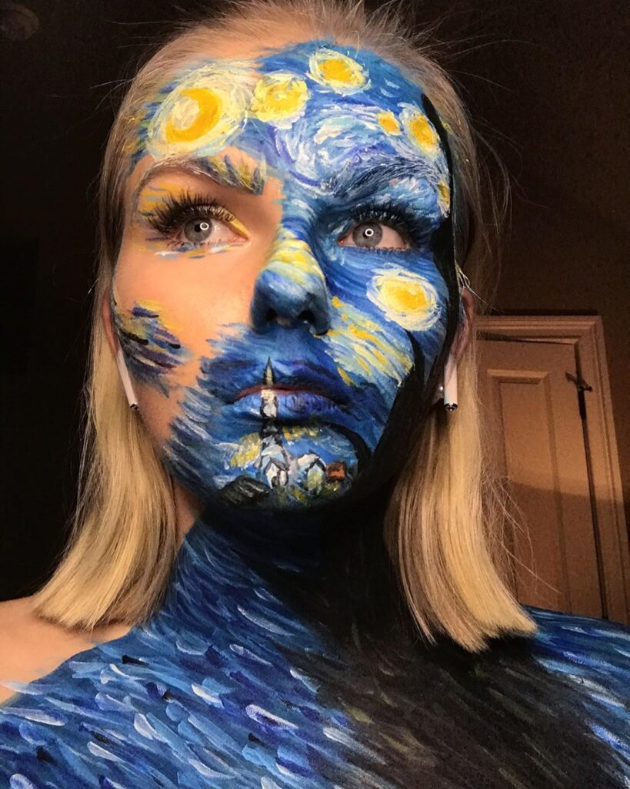
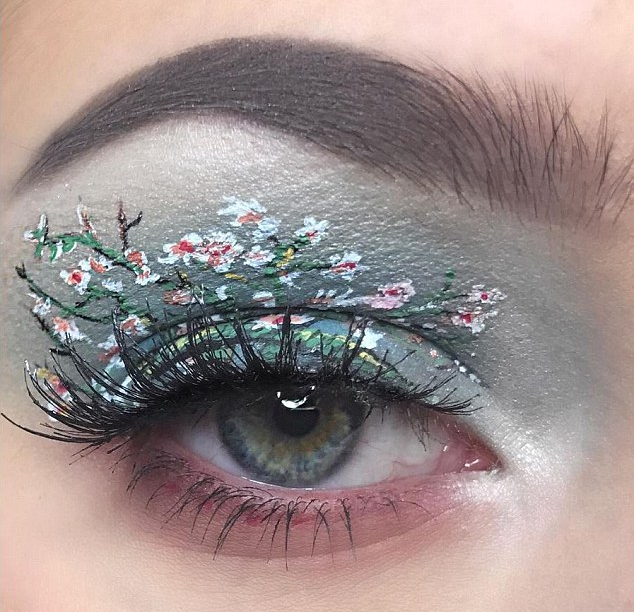
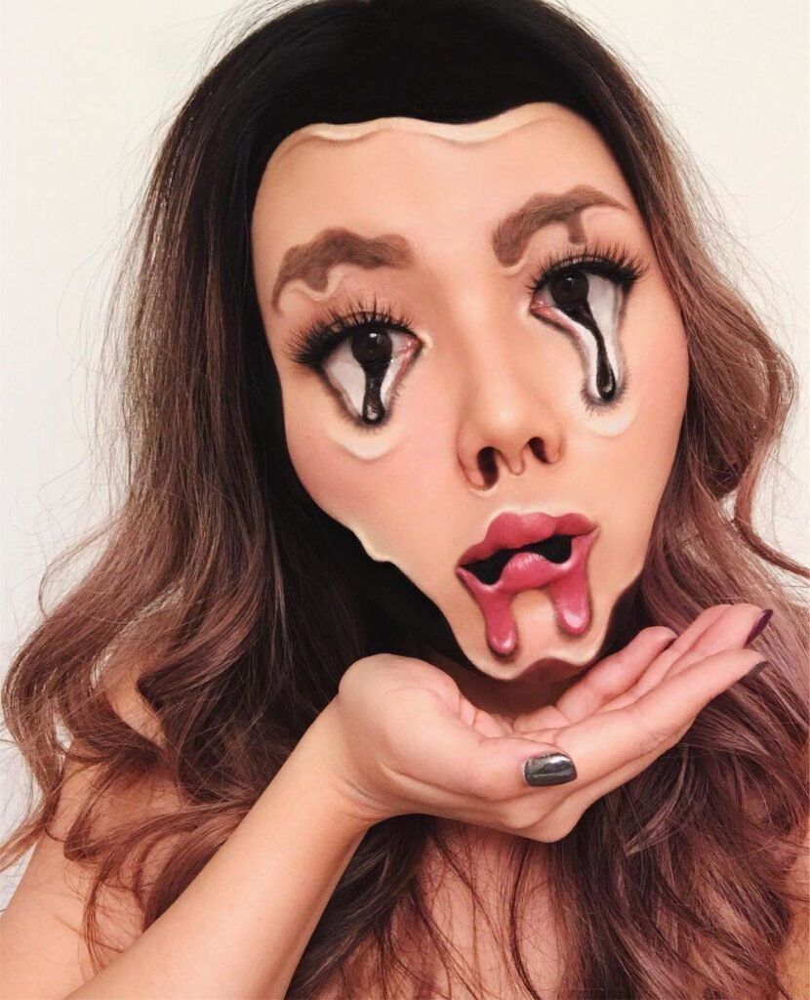
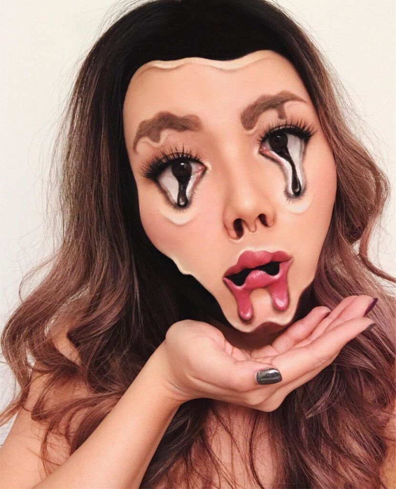
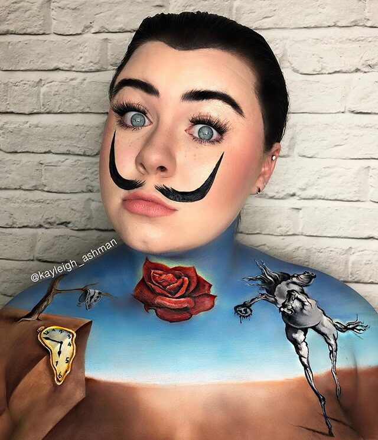
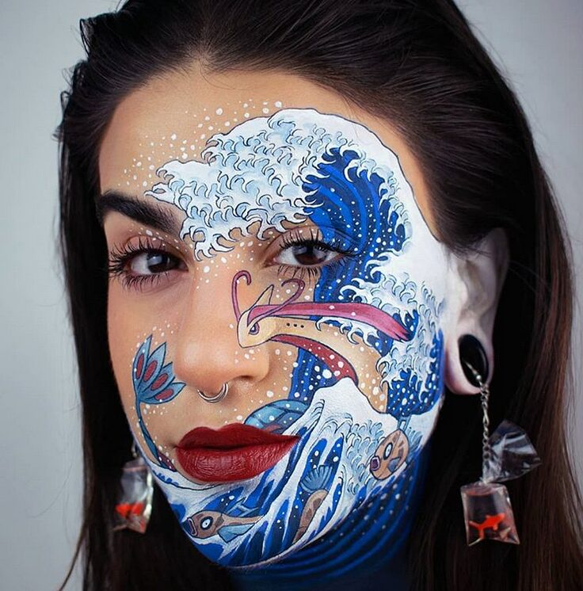
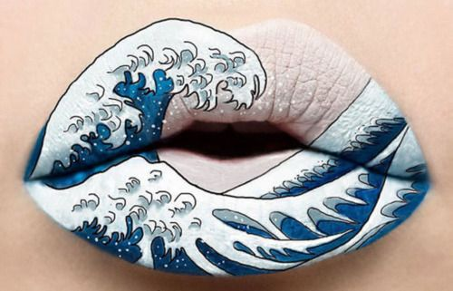
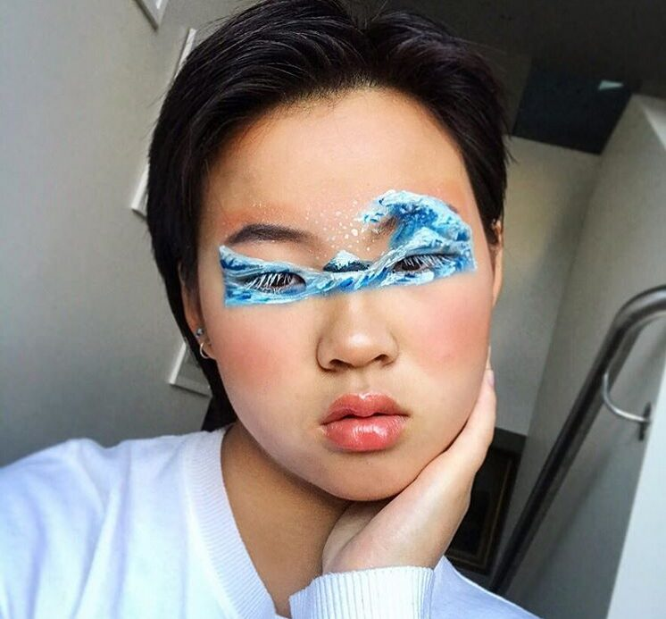
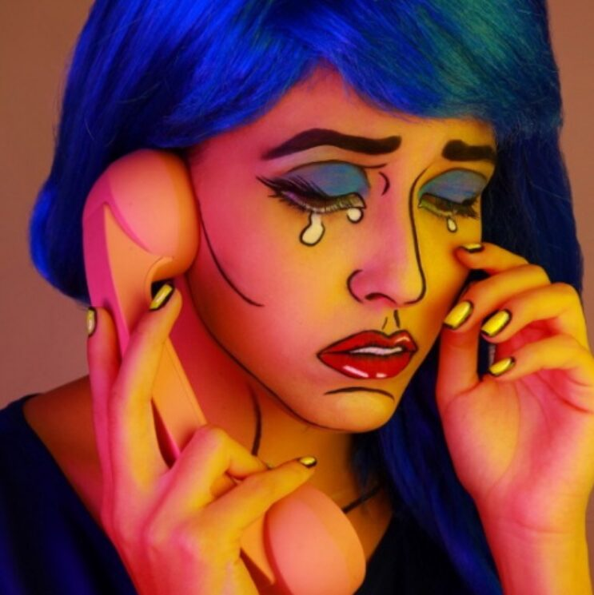

Makeup Inspired by Art

Who says you have to confine yourself to a gleaming lip, a pretty eye, and maybe a little glitter at holiday time? The most exciting, most adventurous young makeup artists working today—emphasis on that second word, artist!—create magic by treating their faces as glorious blank canvases. This crew thinks nothing of adorning and obscuring their features in ways that hover between dream and nightmare, inviting us along on a fascinating excursion to the dark—and the light—side of self-creation.
Makeup is a powerful thing. It can transform us into whoever or whatever we want. Many makeup artists create stunning looks for every occasion we can imagine. Also let’s not forget their talent when it comes to special movie effects, where they can transform a human into an entirely different creature. Likewise, some artists spend six to eight hours recreating art masterpieces on their faces and bodies! Makeup inspired by art masterpieces is very impressive. It is both an ode to the masters of art and a celebration of contemporary creativity!
Van Gogh
Makeup artists have recreated many works of Van Gogh. Either an eye makeup or a whole Starry Night theme all over the body, every makeup creation is stunning. A few artists actually transformed themselves into Van Gogh!
Starry Night (Vincent van Gogh) inspired makeup._maryann.k/Instagram.
Almond Blossoms (Vincent van Gogh) inspired makeup. stefaniaviks/Instagram.
Vincent van Gogh inspired makeup. Angie Davis/Instagram.
Salvador Dali
The Persistence of Memory is a major inspiration for makeup artists. Whether it is about making a melting clock on their eyes or making their whole face melt, we can’t get enough of their creativity!
 

Salvador Dali inspired makeup. Mimles/Instagram.
Salvador Dali inspired makeup. Kayleigh_Ashman/Instagram.
The Great Wave off Kanagawa
Everyone is familiar with the famous painting of Hokusai. But have you seen the makeup recreations of it? This is my personal favorite category
The Great Wave off Kanagawa (Katsushika Hokusai) and Pokemon inspired makeup. elepeints/Instagram.
The Great Wave off Kanagawa (Katsushika Hokusai) inspired lips makeup. girlgreybeauty/Instagram.
The Great Wave off Kanagawa (Katsushika Hokusai) inspired makeup. Ti (tea)/Instagram.
Pop Art
Once again, makeup inspired by art amazes us. The artists turn themselves into true works of pop art!
